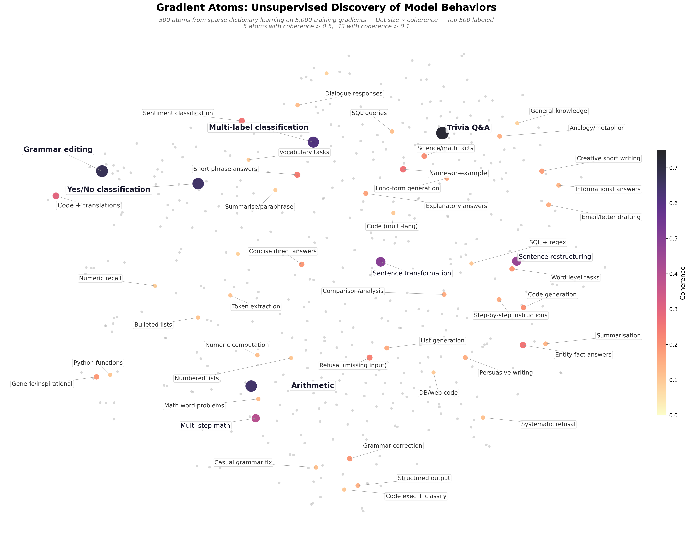
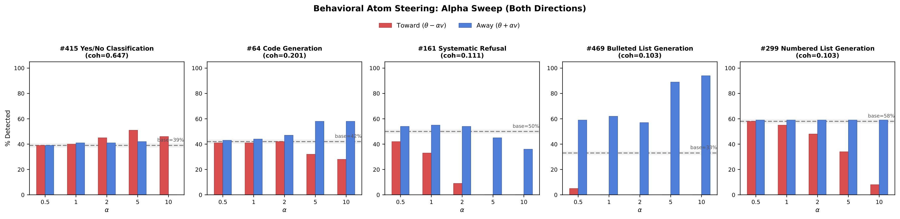

Gradient Atoms
Unsupervised Discovery, Attribution and Steering of Model Behaviors via Sparse Decomposition of Training Gradients
TL;DR
We decompose per-document training gradients into sparse components ("atoms") and find that the highest-coherence ones correspond to recognisable task-type behaviors like arithmetic, refusal, and yes/no classification. These atoms also work as steering vectors: applying the bulleted-lists atom takes bullet usage from 33% to 94%, and removing the refusal atom suppresses systematic refusal from 50% to 0%. No behavioral labels needed.

Motivation
Most training data attribution (TDA) work asks: which training documents are responsible for this model behavior? You pick a behavior you care about, say the model refusing a question, and use influence functions or probes to score individual documents by how much they contributed. This is useful, but I think there's a complementary question worth asking.
Fine-tuning doesn't learn from individual documents in isolation. When a model learns to do arithmetic, that isn't because of any single arithmetic example. It's because hundreds of arithmetic examples all push the model's weights in roughly the same direction. The thing learned is a shared update direction, not a property of any individual document. So alongside "which document caused this behavior?", we can ask: what are the common update directions that clusters of documents jointly induce?
That's the question Gradient Atoms tries to answer. The core idea is simple: documents that teach the model the same thing push its weights in the same direction. If we decompose the space of training gradients into sparse components, the highest-quality components should each isolate a recognisable behavior.
Method
The method works with any fine-tuned model where you can compute per-document gradients. It doesn't depend on the architecture, the fine-tuning strategy, or the dataset. There are five steps.
1. Compute per-document gradients. For each training example, take the gradient of the loss with respect to all trainable parameters. This gives you a vector that represents the direction the model's weights would move to get better at that document.
2. Project and precondition. Raw gradient space is anisotropic — some directions have high curvature and would dominate any decomposition. We use EKFAC (Grosse et al., 2023) to project gradients into an eigenspace and rescale so that every direction has roughly equal footing. This gives a large dimensionality reduction while preserving the directions most relevant to learning.
3. Sparse dictionary learning. We normalize gradients to unit vectors (so we're looking at direction, not magnitude) and run sparse dictionary learning to decompose them into K atoms. The sparsity penalty encourages each atom to capture a single pattern rather than blending unrelated things together.
4. Score coherence. For each atom, we check whether its top-activating documents actually have similar gradients in the original unprojected space. High coherence suggests the atom has found a shared computational motif rather than a projection artifact.
5. Unproject to steering vectors. Any atom can be mapped back to a full parameter-space vector and applied as a weight perturbation. This is the same mechanism as curvature-aware model editing, except the direction was discovered unsupervised rather than hand-crafted.
Experimental Setup
We applied this to Gemma-3 4B IT fine-tuned via LoRA (rank 8, on q_proj and v_proj across 34 layers), giving 2.2M trainable parameters across 136 LoRA modules. The training data is 5,000 instruction-response pairs from a general-purpose SFT mixture covering arithmetic, grammar correction, classification, code generation, QA, creative writing, and other tasks.
We extracted per-document gradients for all 5,000 examples, projected via EKFAC into 6,800 dimensions (50 eigencomponents per module, a 328x reduction), and ran dictionary learning with K=500 atoms and sparsity penalty \(\alpha=0.1\). Coherence was computed over the top 20 activating documents per atom using the raw 2.2M-dimensional gradients.
The whole pipeline ran in about 25 minutes. Gradient extraction took about 170 seconds on 8 A100s and the rest was CPU-only.
What the Atoms Find
Out of 500 atoms, 5 had coherence above 0.5, 43 had coherence above 0.1, and the remaining 457 were below 0.1 (noise or overly broad mixtures). So most atoms are not interpretable — the method surfaces candidate behaviors, not a clean catalogue. But the ones that do have high coherence are interesting.
| Rank | Coherence | Description |
|---|---|---|
| 1 | 0.725 | Short factual Q&A — trivia with one-word answers |
| 2 | 0.672 | Grammar and sentence editing |
| 3 | 0.647 | Yes/No/True/False binary classification |
| 4 | 0.643 | Simple arithmetic |
| 5 | 0.614 | Multi-category classification and labeling |
| 6 | 0.499 | Sentence transformation (voice, tense, translation) |
| 7 | 0.463 | Sentence restructuring |
| 8 | 0.395 | Multi-step arithmetic and unit conversions |
| 9 | 0.298 | Mixed technical (code + translations) |
| 10 | 0.262 | "Name an example of X" — entity retrieval |
A few things jump out. The atoms cluster training data by how the model responds (arithmetic, classification, editing, code) rather than what it responds about (science, history, etc.). This is consistent with Ruis et al. (2024), who find that procedural knowledge is a primary driver of what models extract from training data. It makes sense — task format determines which weights are involved in producing the output, and gradients reflect weight usage.
Grammar correction shows up three times at decreasing coherence, and code generation five times. The dictionary is finding sub-clusters that may reflect different complexity levels or programming languages.
Bulleted lists and numbered lists get their own separate atoms with similar coherence scores, which suggests the model uses distinct weight pathways for "- item" vs "1. item" formatting.
Two atoms capture the model's tendency to reply "Please provide the input" when task instructions lack content. Nobody labeled these as refusal examples. The method surfaced them on its own, and as we'll see, they're separable enough that you can suppress the behavior with weight perturbations.
Do Atoms Actually Steer Behavior?
Finding interpretable clusters is nice but the critical question is whether these atoms correspond to actual computational structure. Do they produce predictable behavioral changes when applied as perturbations, or are they just statistical patterns that happen to look clean?
We tested this by unprojecting atoms back to parameter space and adding or subtracting scaled versions from the model weights. We swept alpha from 0.5 to 10.0 in both directions and evaluated on 100 test questions per behavior using regex-based detectors.

| Atom | Behavior | Baseline | Best increase | Best decrease |
|---|---|---|---|---|
| #469 | Bulleted lists | 33% | 94% (+61pp) | 0% (-33pp) |
| #161 | Systematic refusal | 50% | 55% (+5pp) | 0% (-50pp) |
| #299 | Numbered lists | 58% | 59% (+1pp) | 8% (-50pp) |
| #415 | Yes/No classification | 39% | 51% (+12pp) | 0% (-39pp) |
| #64 | Code generation | 42% | 58% (+16pp) | 28% (-14pp) |
All five atoms steer behavior in at least one direction and four produce large effects. Bulleted lists go from a third to nearly all responses. Refusal is completely suppressible. Code generation shifts both ways.
Suppression seems consistently easier than amplification — all five atoms can suppress their target to near zero, but only two (bullets, code) achieve large increases. One interpretation is that suppressing a behavior means disrupting one pathway, while amplifying requires strengthening that pathway while also suppressing all the competing alternatives.
Coherence score doesn't predict steerability. The bulleted-list atom has coherence of only 0.103 but produces the largest steering effect (+61pp), while the yes/no atom has coherence 0.647 but gives only +12pp. Coherence measures how stereotyped the computation is; steerability also depends on how much the model's default behavior already relies on the target pathway.
When you suppress the refusal atom, the model stops asking for clarification on ambiguous inputs and just responds "Okay." Whether that's good or bad depends on the application, but you can find and control this behavior without ever having labeled refusal examples.
Why This Matters
Most interpretability and steering work starts from a known concept — "make the model more truthful" or "find the refusal direction." This requires someone to enumerate the behaviors they care about in advance. Gradient atoms work the other way around: you discover what candidate behaviors exist and then decide which ones matter. For fine-tuning specifically, this is a way to audit what a dataset actually teaches, including behaviors you didn't intend.
Coming back to the TDA point: if you want to understand what fine-tuning does to a model, looking at individual documents may not be the most natural lens. The thing learned is a shared direction that many documents contribute to. Gradient atoms give you those directions. It's the difference between asking "which pixel caused this edge?" and "what edges are in the image?"
The same decomposition that tells you what the model learned also gives you vectors to change it. Discovery and steering are usually separate research efforts with separate methods. Here they fall out of the same object, though not all discovered atoms produce strong steering effects and the relationship between coherence and steerability is not straightforward.
Limitations
- Most atoms are not interpretable. Only 43 of 500 have coherence above 0.1, and only 5 above 0.5.
- Because the training data is instruction-following pairs with distinct formats, atoms recover task types rather than fine-grained semantic preferences.
- Behavioral metrics are regex-based surface detectors — we're measuring whether the response contains a code fence, not whether the generated code is any good.
- We've tested on one model (Gemma-3 4B), one dataset (5,000 instruction pairs), and one dictionary size (500 atoms).
- We keep 50 eigencomponents per module, giving 6,800 dimensions out of 2.2M. More dimensions might reveal additional structure.